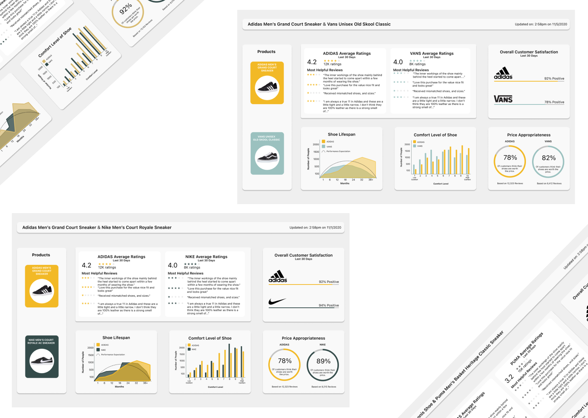
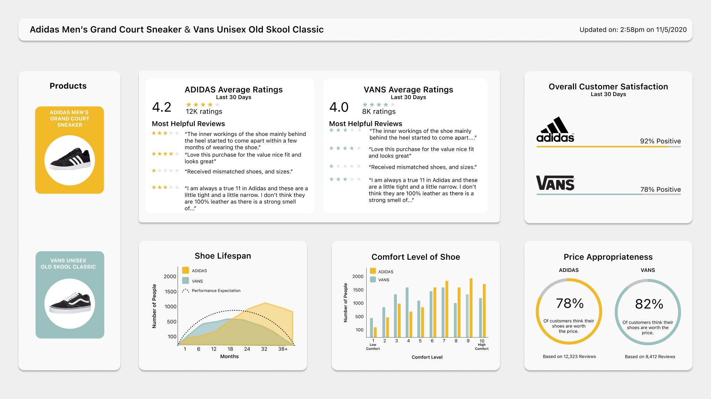

Dashboard

Data Visualization for the Design Process
How can comparative data, between brands, on existing
customers be used by designers to prove viability of new
designs and identify areas for improvement.
Our team worked to design a digital dashboard that would
display relevant data to aid researchers and designers in understanding
user need.
Before we could begin the dashboard design process, we had to understand what types of
data would be useful for our targeted client. We played around with addidng data like
trending words and reason for return of the product. But after team discussion we understood
that data like return reason was not in the work scope of the design team. A comparative
data display shows users not only their own product data, but how their products compare to
similar brands in the same industry. Data alone is useless without context.

DESIGN ELEMENTS
1. Left most column identifies the two products being compared
2. Each product is given an identifiable color used in the modules
3. Data representation is unique to the type of data showcased
CONTROL DESIGN
The physical control designed above allows the users to change the products
that are being compared on the dashboard. The top of the dashboard, as well as
the before mentioned left column, changes dynamically to match the settings on
the control.